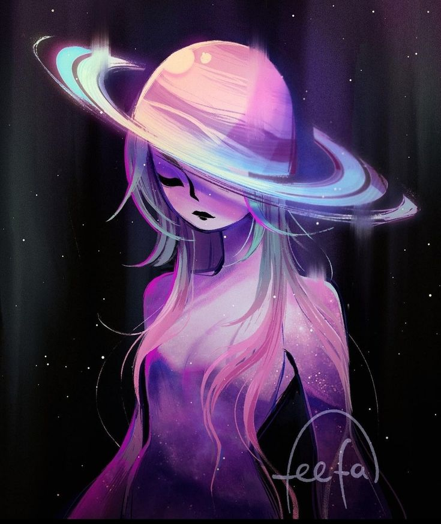
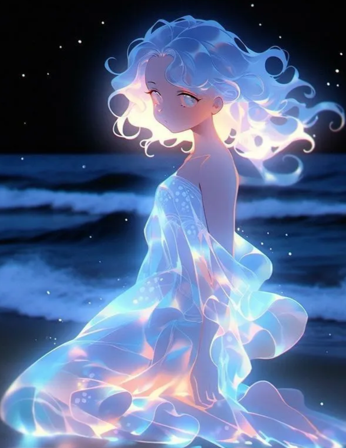

FIlha Eclipse

Primogênita dos seres universais. Nasceu bela, porém não com tantos talentos quanto sua irmã. Ela se encontra em um mapa muito distante dos seus pais. O pq? (penso nisso depois). Será feito uma quest com ela e somente com ela é possível acabar com o evento do Eclipse. Mas a quest dela vai além disso. Uma garota a qual o Protagonista ira simpatizar (pq ele também tem uma filha). Será uma amiga para sua filha no fim do jogo, diferente de sua irmã ela não ajudara o protagonista contra o boss final, mas sim no caminhar dele para a volta pra casa.
Terá importância para o final bom do jogo
Filha Andromeda

Menina que nasceu com talento para absorver e se tornar um com algo. Imune a qualquer coisa (inclusive a doença). Tanto ela quanto sua irmã Eclipse são filhas do Pai Solar e da Mãe Lunar, porém Andromeda era considerada sua filha nascida perfeita. Ela pode ser encontrada após a derrota de seus pais, em uma sala secreta que só se mostra acessível após a derrota de sua mãe.
Arquepelago Astral
Terá importância para o final bom do jogo